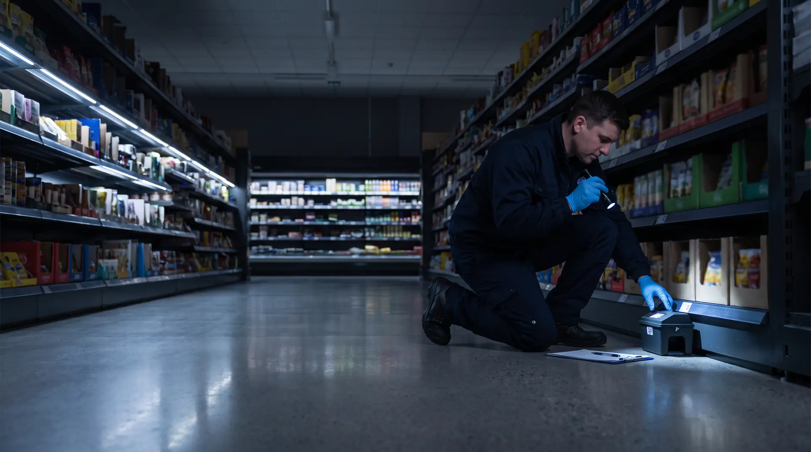
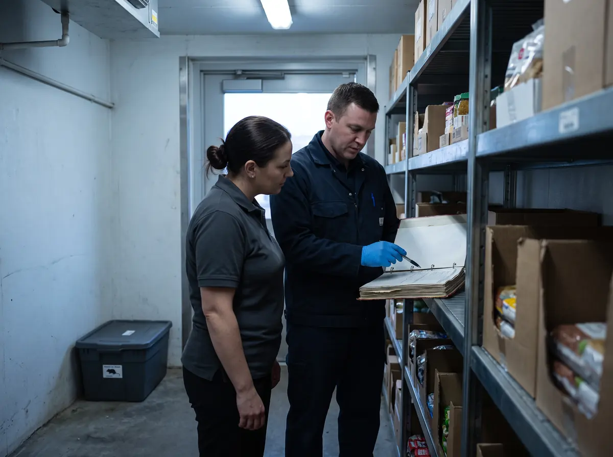
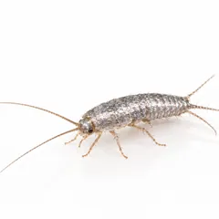
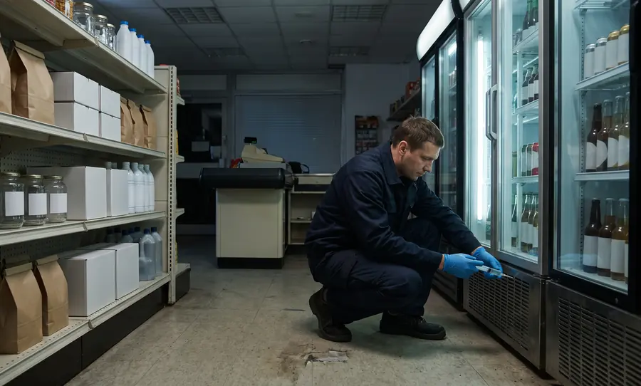
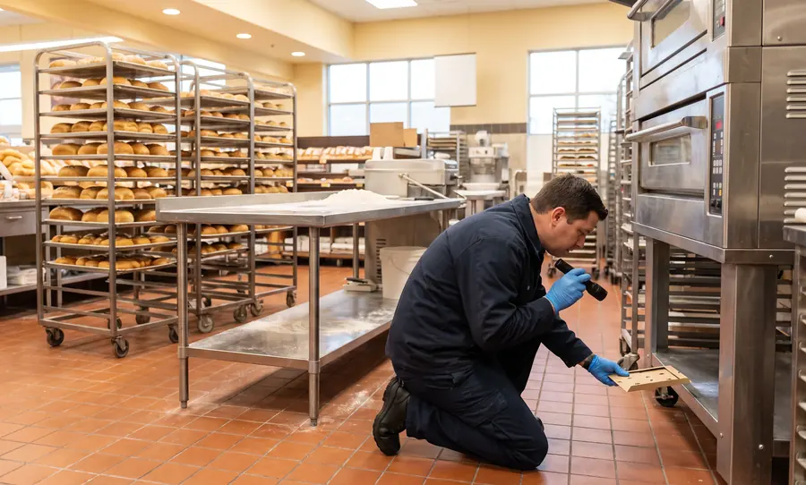
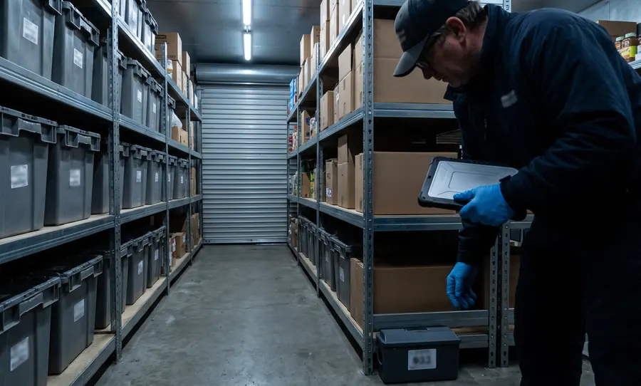
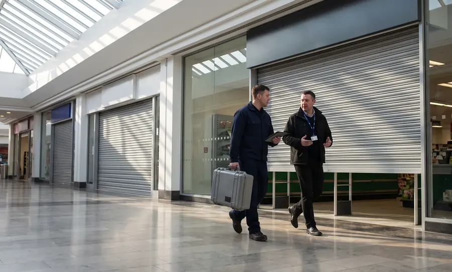

Крысы и мыши
Зоны 1 · 2 · 6 · 7Рампа, склад, мусорокамера. Станции с приманкой — снаружи и у ТКО, в зале и на складе — ловушки без яда.

Дератизация и дезинсекция магазинов в Москве и Московской области по системе IPM, СП 2.3.6.4281-26 и СанПиН 3.3686-21. Бесплатное обследование магазина и расчёт по всем адресам сети.
0 из 5 на месте
Отметьте, что уже есть в вашем магазине. Каждый пустой пункт — замечание при проверке Роспотребнадзора или внутреннем аудите сети.
Заказать бесплатное обследованиеПест-контроль магазина — это постоянная защита торгового объекта от грызунов и насекомых по системе IPM: обследование, пронумерованные точки контроля на схеме, плановые осмотры, барьерные меры и обработки только по показаниям — с записью каждого визита в журнал.
Для торговой сети к этому добавляются единый стандарт на все адреса и ежемесячный сводный отчёт для отдела качества. Так директор каждого магазина готов к проверке, а сеть видит, где проблема, ещё до жалобы покупателя.
Нормы сверены 6 ноября 2026 г. · Методический отдел ПЕСТКОНТРОЛЬ Центр
Грызуны и насекомые приходят с поставками, из соседних помещений и с площадки отходов, а закрепляются там, где тепло, есть вода и корм. Точки контроля ставим по этим зонам и наносим на схему магазина.
Когда магазинов десятки, проблемы начинаются с разнобоя: в одном журнал ведут, в другом есть только акты, в третьем ловушки не совпадают со схемой. Выстраиваем одну систему на всю сеть.
| Магазин | Визиты | Находки | Статус |
|---|---|---|---|
| № 01 супермаркет | 2/2 | — | Норма |
| № 02 у дома | 2/2 | Мышь на складе | Меры приняты |
| № 03 супермаркет | 3/2 | Дрозофилы, овощи | Превышение |
| № 04 даркстор | 2/2 | — | Норма |
| № 05 у дома | 1/1 | Щель у ворот рампы | Рекомендация |
Покупатели не должны видеть специалиста с ловушками, а персонал — дышать средствами. Визиты планируем на ночь, раннее утро или санитарный день, а обработки зала проводим в отсутствие покупателей и персонала (п. 14 СП 2.1.4284-26).

Рампа, склад, мусорокамера. Станции с приманкой — снаружи и у ТКО, в зале и на складе — ловушки без яда.

Пекарня, кулинария, моторные отсеки витрин, помещения персонала. Обработка магазина от тараканов — гелями в щели, очаги ищем по клеевым мониторам.

Овощи и фрукты, возвратная тара, отходы. Сначала ищем места выплода, затем ставим приманочные и световые ловушки.

Крупы, мука, орехи, сухофрукты, корма для животных. Феромонные ловушки на складе и в бакалее, проверка партий на приёмке.

Одежда, текстиль, шерсть, бумага и картон на складе. Обработку магазина от моли начинаем с феромонных ловушек в зале и подсобке.

Рампа, навесы, козырьки над входом. Закрываем проёмы и ставим противоприсадочные системы.

Маленький склад и поставки каждый день: барьер на приёмке, гели у холодильников и витрин, 1–2 визита в месяц.

Дезинсекция супермаркета начинается с собственного производства — самой тёплой зоны: точки у печей и моек, световые ловушки, схема по всем восьми зонам.

Работают круглосуточно: визиты в окна с наименьшей нагрузкой, упор на приёмку, стеллажи хранения и возвратную тару.
Одежда, текстиль, товары для дома: моль и кожееды в зале, грызуны на складе. Работы — без покупателей и персонала (п. 14 СП 2.1.4284-26).

Общие зоны ТЦ обычно обслуживает подрядчик управляющей компании, помещение магазина — ваш договор. Стыкуем схемы и графики, чтобы не было ничьих зон.
Склад, из которого товар уходит в магазины: барьер на рампах, контроль партий, чтобы вредители не разъезжались по адресам.
На проверке инспектор сверяет записи в журнале с номерами ловушек на стенах. Поэтому часть документов лежит в каждом магазине, а часть — в офисе сети.
| Документ | Где хранится | Кому показывают |
|---|---|---|
| Договор и перечень магазинов | Офис сети | Юристы, бухгалтерия |
| Программа пест-контроля | Офис сети и магазин | Отдел качества, аудитор |
| Схема точек контроля магазина | Магазин | Все проверяющие |
| Журнал учёта с записью каждого визита | Магазин | Роспотребнадзор, аудит сети |
| Акты выполненных работ | Офис сети, ЭДО или бумага | Бухгалтерия |
| Копия лицензии исполнителя | Магазин | Роспотребнадзор |
| СГР и инструкции на средства | Магазин | Роспотребнадзор, отдел охраны труда |
| Ежемесячный сводный отчёт | Офис сети | Отдел качества, операционный директор |
Образцы: программа пест-контроля, журнал пест-контроля, договор на дератизацию и дезинсекцию. Формат журнала и отчёта подстраиваем под чек-лист отдела качества сети.
Один договор на все адреса, типовая схема точек для формата, новый магазин сразу встаёт в общий график и отчёт.
Срочный выезд, поиск путей проникновения, барьер на рампе, усиленный мониторинг, пока на точках не станет чисто.
Ищем места выплода: перезревшие плоды, возвратная тара, поддоны витрин, трапы. Ловушки, санитарные рекомендации, контроль по журналу.
Типовые ситуации, а не описания конкретных клиентов.
Точную сумму фиксируем в договоре после бесплатного обследования. Оплата ежемесячная, с НДС или без НДС, документы — по ЭДО или на бумаге.
| Формат | Что входит | Ориентир |
|---|---|---|
| Магазин у дома, небольшой магазин | Грызуны и насекомые, 1–2 визита в месяц, точки контроля, журнал, акты | от 3 500 ₽/мес |
| Склад или распределительный центр до 1 000 м² | Периметр, рампы, зоны хранения, отчёт для отдела качества | от 4 500 ₽/мес |
| Супермаркет с производством, гипермаркет | Все восемь зон, световые ловушки, визиты по графику производства | после обследования |
| Сеть магазинов | Один договор, общий график, журнал в каждом магазине, сводный отчёт по сети | расчёт по адресам |
| Разовая обработка магазина | Выезд, обработка от грызунов или насекомых, акт и рекомендации | от 3 500 ₽ |
Формат и площадь магазина, собственное производство и склад, текущая заселённость, число зон риска, кратность визитов и требования отдела качества к отчётам.
Обследование и расчёт — 0 ₽. Ночные и выходные окна — без наценки. В абонентскую плату входят визиты по графику, обслуживание точек контроля, журнал, акты и ежемесячный отчёт.
Для магазинов, которые продают пищевую продукцию, — СП 2.3.6.4281-26: они заменили СП 2.3.6.3668-20. По п. 78 в помещениях не должно быть насекомых и грызунов, а дезинсекцию и дератизацию, включая защиту здания от проникновения, проводят в порядке и с периодичностью, которые определяет сам магазин с учётом СанПиН 3.3686-21. Для непродовольственных магазинов действует СП 2.1.4284-26 (п. 14). Оба документа действуют с 01.09.2026 по 01.09.2032.
Организации, которые хранят и продают пищевую продукцию, относятся к объектам особого эпидемиологического значения (п. 98 СанПиН 3.3686-21). Обследования на насекомых — не реже 2 раз в месяц (п. 101), по грызунам — ежемесячная оценка, и по её результатам проводится дератизация (п. 110). Истребительные обработки делаем по показаниям мониторинга, а не по календарю.
Да. Осмотр точек, замена вкладышей и гели в щелях не мешают торговле. Обработку торгового зала проводим в отсутствие покупателей и персонала (п. 14 СП 2.1.4284-26) — ночью, до открытия или в санитарный день. Ночные и выходные окна — без наценки.
Сначала ищем очаги по клеевым мониторам: пекарня, кулинария, моторные отсеки витрин, помещения персонала. Затем гель точечно наносится в щели и закрытые зоны — товар остаётся на полках, а контрольный осмотр через 10–14 дней показывает результат. Если нужна обработка распылением, продукцию заранее убирают или укрывают — список подготовки директор магазина получает до визита.
Один договор: магазины перечислены в приложении, график визитов общий, цена — по каждому адресу. В каждом магазине — своя схема точек, журнал и папка документов. Раз в месяц сеть получает сводный отчёт по всем магазинам: визиты, находки, превышения и рекомендации.
Договор с исполнителем, копия его лицензии, программа пест-контроля, схема точек контроля, журнал учёта с записями визитов, акты выполненных работ, СГР и инструкции на применяемые средства. Образцы программы и журнала есть в разделе «Материалы».
За своё помещение отвечает тот, кто в нём торгует: требования п. 78 СП 2.3.6.4281-26 и п. 14 СП 2.1.4284-26 адресованы хозяйствующему субъекту. Общие зоны ТЦ обычно обслуживает подрядчик управляющей компании; как распределены зоны, указано в договоре аренды. Мы стыкуем свои схемы и графики с подрядчиком ТЦ.
Предписание и административная ответственность. Например, за нарушение санитарных требований к эксплуатации общественных помещений юрлицу грозит штраф от 10 до 20 тыс. ₽ или приостановление деятельности на срок до 90 суток (ст. 6.4 КоАП РФ). Для магазина приостановление обходится дороже любого абонемента.
По договору внеплановый выезд — в течение 3 часов, срочные выезды работают 24/7. Специалист ищет путь проникновения, ставит дополнительные точки, делает запись в журнале и даёт директору список того, что закрыть или отремонтировать.
Да. С 01.03.2025 дезинфекция, дезинсекция и дератизация требуют лицензии; работы выполняются по лицензии ООО «Центр дезинфекционных услуг» № Л064-00111-77/01942445. Работаем с НДС и без НДС, договор и акты подписываем по ЭДО или на бумаге.
Специалист осмотрит магазин в Москве или Московской области: зоны риска, следы вредителей, пути проникновения и папку документов. Для сети — подготовим стандарт и расчёт по всем адресам.